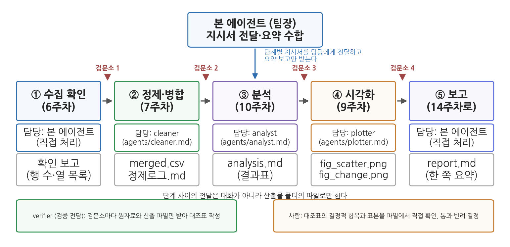
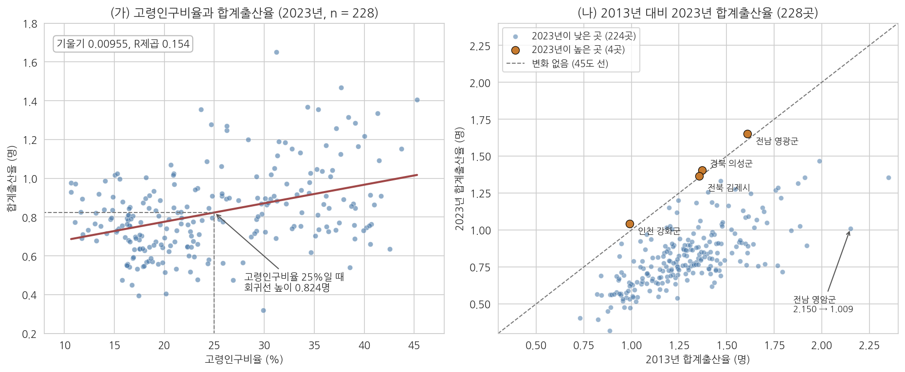
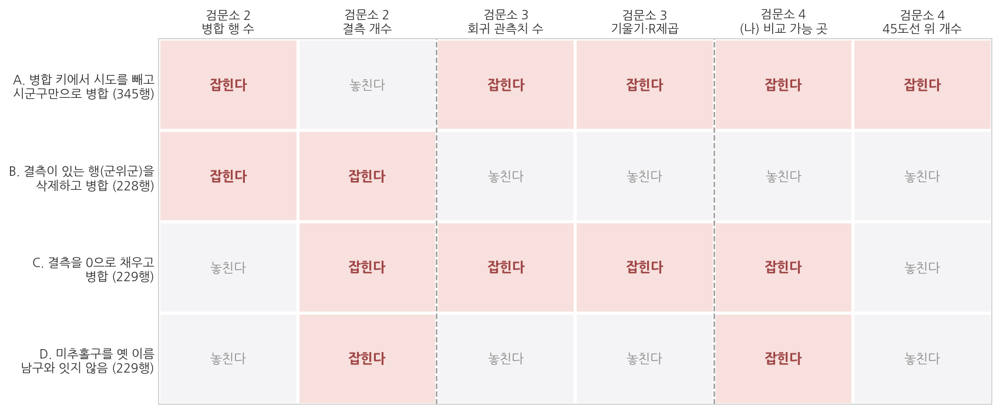

13주차 2회차. 전 과정 파이프라인 구축하기
최종 수정: 2026-09-03 · 이 교재는 학기 중에도 계속 업데이트됩니다
이 실습에서 하는 것
1회차에서 서브에이전트, 파이프라인, 검문소를 개념으로 배웠다. 오늘은 그것을 전부 실행한다. 학기 내내 써 온 시군구 데이터에서 출발해, 정제·병합(7주차) → 통계 분석(10주차) → 시각화(9주차) → 요약 보고까지를 하나의 지시로 묶어 에이전트 팀에게 맡기고, 단계마다 검문소에서 직접 확인한다. 팀원은 정제·분석·시각화 담당과 검증 전담 verifier의 넷이며, 각각을 .claude/agents/ 폴더의 파일로 등록한다. 마지막에는 빈 폴더에 데이터와 지시문만 복사해 처음부터 다시 돌리는 재현성 테스트로 마무리한다. 지난 몇 주 동안 따로따로 배운 기술이 한 줄로 꿰어지는 날이다.
이 실습이 끝나면 다음 산출물이 폴더에 남는다.
파이프라인.md: 파이프라인 명세서 (단계·입력·출력·담당·검문 항목).claude/agents/폴더의 팀원 파일 4개:cleaner.md,analyst.md,plotter.md,verifier.md보고서식.md: 담당이 팀장에게 올리는 요약 보고의 형식 (2.3에서 정한다)지시문_파이프라인.md: 전 과정을 한 번에 시키는 완결된 지시문output/폴더: 병합 데이터, 분석 결과표, 그림, 요약 보고서, verifier의 대조표 네 장
이 산출물 묶음이 그대로 14주차 최종 보고서의 재료이자 재현 패키지의 뼈대가 된다.
오늘의 작업 순서는 명세서 쓰기(2.1) → 팀원 파일 등록(2.2) → 보고 서식 정하기(2.3) → 파이프라인 실행(2.4) → 검문소 운영(2.5) → 재현성 테스트(2.6)이고, 마지막 2.7은 시간이 남을 때 하는 선택 심화다. 일곱 단계가 많아 보이지만 2.1부터 2.3까지는 실행 전에 종이 위에서 하는 설계이고, 2.5는 2.4가 돌아가는 동안 곁에서 하는 일이다. 손으로 직접 돌리는 것은 2.4와 2.6 둘뿐이다.
준비물
| 구분 | 내용 |
|---|---|
| 폴더 | 학기 프로젝트 폴더 공공데이터분석 |
| 데이터 | data/sigungu_2023.csv (229개 시군구 인구·출산 지표, 출처: 행정안전부 주민등록인구통계·국가데이터처(옛 통계청) 인구동향조사, KOSIS 수집), data/sigungu_tfr_2013.csv (2013년 시군구 합계출산율, 같은 출처) |
| 도구 | VSCode + Claude Code, uv 파이썬 환경 (3주차에 구축한 것), 4주차에 만든 csv-profile 스킬 |
| 참고 코드 | code/ch13_practice.py (검문소별 대조표의 정답 수치, 오류 시나리오 네 가지의 결과. 본문 수치가 어떻게 나왔는지 확인할 때 참조) |
| 선수 내용 | 13주차 1회차 (서브에이전트, 파이프라인, 검문소), 7주차 (병합), 9주차 (시각화), 10주차 (회귀), 5주차 (Skill 심화: 인자와 context: fork), 2주차 (검증 손잡이, 계획 모드, CLAUDE.md) |
오늘의 공통 예제는 "지난 10년 사이 시군구 출산율은 어떻게 변했고, 고령화와 어떤 관계가 있는가"라는 질문이다. 두 데이터 파일은 이미 확보되어 있으므로 수집 단계는 확인만 하고 지나간다. (1회차 1.3절에서 본 대로 kosis MCP를 쓰면 수집 자체를 파이프라인의 한 단계로 자동화할 수도 있지만, 오늘은 단계 사이의 연결과 검문에 집중한다.) 실습은 이 공통 예제로 진행하고, 제출 과제에서 같은 절차를 자기 프로젝트 데이터에 적용한다.
2.1 파이프라인 명세서 쓰기: 단계·파일·담당·검문 항목
무엇을 왜 하는가. 팀을 부리려면 조직도가 먼저다. 에이전트에게 지시를 던지기 전에, 무엇을 몇 단계로 나누고 각 단계가 무엇을 받아 무엇을 내놓으며 누가 맡는지를 사람이 먼저 정한다. 1회차 표 13-1의 단계 정의서에 담당 열을 더한 것이 오늘의 파이프라인 명세서다. 프로젝트 폴더에 파이프라인.md 파일을 만들고 아래 내용을 직접 작성하라. (타자가 힘들면 에이전트에게 틀을 만들게 해도 좋지만, 각 칸의 내용은 자기 판단으로 채운다.)
표 13-3. 오늘 실습의 파이프라인 명세서 (파이프라인.md에 옮겨 적을 내용)
| 단계 | 입력 | 처리 | 출력 | 담당 | 검문 항목 |
|---|---|---|---|---|---|
| ① 수집 확인 | data/의 CSV 2개 |
파일 존재·행 수·열 목록 확인 | 확인 보고 | 본 에이전트 | 2023년 229행, 2013년 264행이 맞는가 |
| ② 정제·병합 | ①의 CSV 2개 | 2023년 파일을 기준으로 시도·시군구 키 병합, 결측 보존, 짝 없는 행 보고 | output/merged.csv, output/정제로그.md |
cleaner | 병합 후 229행인가, 짝을 못 찾아 2013년 값이 빈 행은 몇이고 왜인가, 결측은 보존되었는가 |
| ③ 분석 | output/merged.csv |
수도권 vs 비수도권 비교, 고령인구비율과 출산율의 회귀 | output/analysis.md |
analyst | 관측치 수가 228인가, 대표 수치 하나를 재검산 |
| ④ 시각화 | output/merged.csv, ③의 결과 |
산점도+회귀선, 2013 대비 2023 변화 그림 | output/fig_scatter.png, output/fig_change.png |
plotter | 그림의 값이 결과표와 일치하는가 |
| ⑤ 보고 | ②③④의 산출물 | 개요·방법·결과·한계를 한 쪽으로 요약 | output/report.md |
본 에이전트 | 보고서의 모든 숫자가 산출물에서 나왔는가 |
담당 열의 cleaner, analyst, plotter는 2.2에서 파일로 등록할 팀원의 이름이다. ①은 파일을 여는 일뿐이고 ⑤는 모든 산출물을 한눈에 봐야 하는 팀장의 일이므로 본 에이전트가 직접 맡는다.

그림 13-4는 표 13-3을 그림으로 옮긴 것이다. 맨 위의 본 에이전트가 단계별 지시서를 담당에게 내려보내고 요약 보고만 받으며, 다섯 단계는 왼쪽에서 오른쪽으로 파일을 통해 이어진다. 각 단계 아래 두 줄이 담당과 산출 파일이고, 단계 사이의 붉은 표시가 검문소다. 맨 아래 두 상자는 검문소를 지키는 두 눈이다. 1회차 그림 13-3대로 verifier가 대조표를 만들고 사람이 결정적 항목과 표본을 확인해 통과·반려를 결정한다. 여기서 알 수 있는 것은 담당이 넷으로 늘어도 사람이 볼 곳은 검문소 넷뿐이라는 점이다.
"파이프라인.md를 읽고 이 명세서를 점검해 줘. 아직 아무것도 실행하지는 마. (1) 각 단계의 입력이 앞 단계의 출력과 정확히 이어지는지, (2) 출력 파일명이 서로 겹치거나 빠진 것이 없는지, (3) 이 데이터로 실행할 때 미리 예상되는 문제(병합 키, 결측, 인코딩 등)가 있는지, (4) 검문 항목이 그 문제를 잡을 수 있게 되어 있는지 검토 의견만 말해 줘."
예상되는 에이전트의 행동과 결과. 에이전트가 파이프라인.md와 두 데이터 파일의 머리 부분을 읽고 검토 의견을 낸다. 2주차에 배운 계획 모드의 응용이다. 화면에는 대략 다음과 같은 의견이 보인다.
[검토 의견]
1. 입력·출력 연결: ②의 output/merged.csv가 ③④의 입력으로 이어짐. 이상 없음.
2. 파일명: 겹침 없음. ④의 fig_change.png는 ③의 결과를 쓰지 않으므로 ③과 동시에 실행 가능.
3. 예상 문제: 두 파일의 행 수가 다름(229 대 264). 2013년 파일에는 분당구 같은
일반구 행이 있고, '남구'만 여섯 곳(부산·대구·인천·광주·울산·경북)이라
시군구 이름만으로 병합하면 뒤섞임. 2023년 합계출산율에 결측 1건.
4. 검문 항목: ②에 '결측 보존'이 있으나 결측 처리 방법이 명세서에 없음.
검증. 에이전트의 검토 의견 중 "예상되는 문제"를 명세서의 검문 항목과 대조하라. 명세서에 없던 위험을 에이전트가 짚었다면 검문 항목에 추가한다. 위 예에서라면 ②의 처리 칸에 "결측은 채우거나 삭제하지 않고 개수만 보고"를 적어 넣는다. 이 한 줄이 2.5의 틀리는 장면에서 결정적인 기준이 된다. 설계 단계에서 검문소를 보강하는 것이 실행 후에 사고를 수습하는 것보다 훨씬 싸다.
2.2 팀원 파일 만들기: 담당 서브에이전트와 verifier 등록
무엇을 왜 하는가. 1회차 1.1절의 셋째 방법, 곧 전담 팀원을 파일로 만들어 두는 일을 실제로 한다. 왜 말로 시키지 않고 파일을 만드는가. 1회차 유의 박스에서 본 대로 서브에이전트는 본 대화를 보지 못하므로, 본 에이전트의 작업 지시서에서 빠진 규칙은 담당에게 전달되지 않는다. 담당별 파일에 규칙을 박아 두면 그 담당은 어떤 지시서를 받든 규칙을 먼저 안다. 파일에는 한 가지를 더 적는다. 담당이 일을 마쳤을 때 본 에이전트에게 무엇을 보고해야 하는지의 형식이다. 보고 형식이 없으면 어떤 담당은 "완료했습니다" 한 줄을, 어떤 담당은 코드 전체를 올려 팀장의 책상이 다시 어지러워진다.
표 13-4. 오늘 등록할 팀원 파일 4개
| 파일 | 담당 단계 | 핵심 규칙 | 보고 항목 |
|---|---|---|---|
cleaner.md |
② 정제·병합 | 원본 불변, 키는 시도+시군구, 결측과 짝 없는 행은 보고만 | 산출 파일, 행 수·열 수, 처리한 것과 하지 않은 것, 확인 필요 사항 |
analyst.md |
③ 분석 | merged.csv만 입력, 결측 제외 개수 보고, 상관·인과 구분 |
관측치 수, 결과표, 해석 문장, 확인 필요 사항 |
plotter.md |
④ 시각화 | merged.csv와 analysis.md만 입력, 제목·축·단위, 한글 폰트 |
그림 파일, 점 개수, 그림에 쓴 수치 |
verifier.md |
검문소 | 만든 사람이 아니라 감사하는 사람, 원자료에서 재계산 | 항목별 일치 여부, 대조한 행 번호, 계산 방법 |
세 담당의 파일은 틀이 같으므로 cleaner.md 전문만 보인다. 4주차의 SKILL.md처럼 머리말과 본문으로 되어 있고, 머리말의 name과 description은 필수다.
---
name: cleaner
description: 파이프라인의 정제·병합 단계 담당. CSV 병합, 결측 보고, 정제로그 작성에 사용.
---
너는 정제·병합 담당이다. 입력은 data 폴더의 원본 CSV, 출력은
output/merged.csv와 output/정제로그.md다.
1. 원본 파일은 수정하지 않는다.
2. 병합 키는 시도와 시군구 두 열의 조합이며, 병합 후 행 수가 기준 파일(2023년)과
같은지 확인한다.
3. 짝을 못 찾은 행과 결측값은 삭제하거나 채우지 않는다. 목록과 개수로 보고한다.
4. 보고는 다음 네 줄로만 한다. 산출 파일 경로 / 행 수·열 수 / 처리한 것과
하지 않은 것 / 사용자 확인이 필요한 사항.
".claude/agents 폴더에 팀원 파일 세 개를 만들어 줘. 첫째 cleaner.md는 내가 지금 붙여 넣는 내용 그대로 만들고, 둘째 analyst.md와 셋째 plotter.md는 같은 틀로 만들되 표 13-4의 규칙과 보고 항목을 본문에 넣어 줘. analyst의 입력은 output/merged.csv만, plotter의 입력은 output/merged.csv와 output/analysis.md만이다. 만든 뒤 세 파일의 전문을 보여 줘. 내용을 지어 보태지 말고 내가 준 규칙만 적어 줘."
에이전트가 만들어 온 두 파일은 다음과 비슷해야 한다. 먼저 분석 담당이다.
---
name: analyst
description: 파이프라인의 분석 단계 담당. 집단 비교와 회귀, 결과표 작성에 사용.
---
너는 분석 담당이다. 입력은 output/merged.csv 하나뿐이고, 출력은
output/analysis.md다.
1. data 폴더의 원본은 열지 않는다. merged.csv에 없는 값이 필요하면
계산하지 말고 사용자에게 묻는다.
2. 결측이 있는 행은 삭제하지 않는다. 계산에서 제외한 개수와 그 이유를
결과표에 적는다.
3. 결과표에는 반드시 사용한 관측치 수를 함께 적는다.
4. 해석 문장에서 상관과 인과를 구분한다. "영향", "효과", "때문에"를 쓰지
않고 "관련", "경향"으로 쓴다.
5. 보고는 다음 네 줄로만 한다. 산출 파일 경로 / 관측치 수 / 대표 수치
세 개 / 사용자 확인이 필요한 사항.
다음은 시각화 담당이다. 규칙 1이 이 팀원에게 가장 중요하다. 1회차 1.2절에서 배운 대로 시각화가 원자료를 몰래 읽으면 그림과 분석표의 숫자가 어긋나기 때문이다.
---
name: plotter
description: 파이프라인의 시각화 단계 담당. 산점도·비교 그림 작성에 사용.
---
너는 시각화 담당이다. 입력은 output/merged.csv와 output/analysis.md
두 개뿐이고, 출력은 output 폴더의 PNG 파일이다.
1. data 폴더의 원본은 열지 않는다. 그림에 쓰는 값은 전부 merged.csv에서
온 것이어야 한다.
2. 모든 그림에 제목, 두 축의 이름, 단위를 넣는다. 축을 자를 때는 자른
범위를 그림 제목이나 축 이름에 밝힌다.
3. 한글은 koreanize_matplotlib로 처리하고 dpi 150으로 저장한다.
4. 그림에 찍힌 점의 개수를 세어 보고한다. analysis.md의 관측치 수와
다르면 그리기를 멈추고 차이를 먼저 보고한다.
5. 보고는 다음 네 줄로만 한다. 그림 파일 경로 / 점 개수 / 그림에 쓴
수치 / 사용자 확인이 필요한 사항.
세 파일을 나란히 놓고 보면 공통 구조가 드러난다. 첫 줄은 역할 선언, 그다음은 입력과 출력의 못박기, 그다음이 하지 말아야 할 일, 마지막이 보고 형식이다. 이 네 덩어리가 팀원 파일의 표준 틀이며, 자기 프로젝트에서 새 담당을 만들 때도 같은 순서로 쓰면 된다. 특히 둘째 덩어리를 눈여겨보라. 세 팀원 모두 "무엇을 읽을 수 있는가"가 아니라 "무엇만 읽을 수 있는가"로 적혀 있다. 파이프라인에서 담당의 권한은 넓히는 것이 아니라 좁히는 것이 안전하다.
이어서 검증 전담 팀원을 만든다. 1회차 1.1절의 검증 에이전트를 그대로 파일로 옮기는 것이다.
"검증 전담 서브에이전트를 등록하려고 해. .claude/agents/verifier.md 파일을 만들어 줘. 머리말의 name은 verifier, description은 '분석 산출물을 원자료와 대조해 검산하는 검증 전담 에이전트. 검증, 검산, 대조, 확인해 달라는 요청에 사용'으로 하고, 본문에는 다음 지침을 적어 줘. (1) 너는 결과를 만든 사람이 아니라 감사하는 사람이다. (2) 검증 대상 파일과 원자료 경로를 받으면 원자료에서 처음부터 다시 계산하고, 결과 파일의 값을 베끼지 않는다. (3) 행 수, 대표 수치, 무작위 표본 5행을 대조해 항목별 일치 여부를 표로 보고하고, 대조에 쓴 행 번호와 계산 방법을 함께 적는다. (4) 차이가 있으면 어느 행·열이 얼마나 다른지 적고 원인은 추측하지 않는다. (5) 확인할 수 없는 항목은 '확인 불가'라고 쓴다. 만든 뒤 파일 전문을 보여 줘."
심화: verifier에게 스킬을 미리 실어 주기. 팀원 파일의 머리말에는 skills: 항목을 둘 수 있다. 여기에 스킬 이름을 적으면 그 스킬의 본문이 팀원의 맥락창에 처음부터 실린다. 4주차에 만든 csv-profile을 verifier에 실어 보자.
---
name: verifier
description: 분석 산출물을 원자료와 대조해 검산하는 검증 전담 에이전트.
검증, 검산, 대조, 확인해 달라는 요청에 사용.
skills:
- csv-profile
---
이렇게 해 두면 verifier는 CSV를 받을 때마다 4주차의 표준 절차(행 수, 열 목록, 결측 위치)로 진단을 시작하므로 대조표의 첫 줄이 늘 같은 형식으로 나온다. 제약이 하나 있다. disable-model-invocation: true로 사용자만 부르게 만든 스킬은 실을 수 없다. 에이전트가 스스로 꺼내 쓰지 못하도록 설명을 에이전트 맥락에서 감춘 스킬이기 때문이다. 5주차에는 context: fork로 스킬을 격리된 서브에이전트 안에서 돌렸다면, 오늘은 반대로 에이전트가 스킬을 품는다.
예상되는 에이전트의 행동과 결과. 파일 네 개가 만들어지고 각 전문이 화면에 표시된다. 팀원 파일은 새 세션에서 인식되므로 Claude Code를 재시작한 뒤 "지금 등록된 서브에이전트의 이름과 설명을 보여 줘"라고 물어 목록을 확인한다(대화창 명령 /agents는 에이전트 파일의 위치를 출력한다).
등록된 서브에이전트 (.claude/agents/)
- cleaner : 파이프라인의 정제·병합 단계 담당. CSV 병합, 결측 보고, 정제로그 작성에 사용.
- analyst : 파이프라인의 분석 단계 담당. 집단 비교와 회귀, 결과표 작성에 사용.
- plotter : 파이프라인의 시각화 단계 담당. 산점도·비교 그림 작성에 사용.
- verifier: 분석 산출물을 원자료와 대조해 검산하는 검증 전담 에이전트. (skills: csv-profile)
검증. 탐색기에서 네 파일을 하나씩 열어 세 가지를 본다. 머리말의 name이 파일 이름과 같은가. description에 자동 위임의 근거가 되는 낱말(병합, 회귀, 그림, 검증)이 들어 있는가. verifier 본문의 첫 줄이 "감사하는 사람"으로 시작하는가. 4주차에 SKILL.md를 검토했던 것과 같은 일이다. 에이전트가 요청하지 않은 규칙(예: "결측은 평균으로 채운다")을 덧붙였다면 지우게 한다. 팀원 파일의 규칙은 이후 모든 실행에서 반복되므로 여기서 잘못 들어간 한 줄이 가장 오래 남는다.
2.3 팀장이 받을 보고 서식 정하기
무엇을 왜 하는가. 팀원 파일마다 보고 항목을 네 줄로 적어 두었다. 그런데 항목만 정하고 형식을 정하지 않으면 세 담당이 제각기 다른 모양으로 보고한다. 어떤 담당은 코드 전체를 화면에 쏟아 놓고, 어떤 담당은 "정제를 완료했습니다"라고만 쓴다. 둘 다 팀장의 일을 늘린다. 앞의 보고는 본 에이전트의 맥락창을 서류로 채워 1회차에서 본 책상 문제를 되살리고, 뒤의 보고는 검문소에서 볼 것이 아무것도 없다. 보고 서식을 미리 정하는 일은 예의의 문제가 아니라 검증의 문제다. 보고 서식은 검문소의 입력 양식이다. 서식의 각 줄이 검문 항목 하나와 짝을 이루면, 보고를 읽는 것만으로 검문의 절반이 끝난다.
무엇이 좋은 보고인지는 두 예를 나란히 놓으면 분명해진다. 아래 두 보고는 같은 작업의 결과다.
[나쁜 보고]
정제와 병합을 성공적으로 완료했습니다. 데이터 품질에 큰 문제는 없었으며,
분석에 사용하기 적합한 상태입니다. 다음 단계를 진행할까요?
[좋은 보고]
- 산출 파일: output/merged.csv (229행 13열), output/정제로그.md
- 핵심 수치(행 수·열 수): 입력 229행 -> 출력 229행 (변동 없음)
- 처리한 것 / 하지 않은 것: 인천 미추홀구를 2013년 남구와 연결함 /
결측 2건(경북 군위군의 합계출산율·출생아수)은 채우지 않고 보존
- 확인 필요: 2013년 파일 쪽 짝 없는 행 36건은 일반구 단위로 보입니다.
버려도 되는지 판단이 필요합니다.
나쁜 보고에는 확인할 수 있는 것이 하나도 없다. "큰 문제는 없었다"는 문장은 사람이 검산할 대상이 아니다. 좋은 보고에는 파일 경로, 숫자, 그리고 판단이 필요한 지점이 있다. 2주차에서 배운 검증 손잡이를 보고 서식으로 옮겨 놓은 것이라고 보면 된다. 표 13-5가 네 줄의 뜻이다.
표 13-5. 담당 보고의 네 줄 서식과 그것이 여는 검문 항목
| 줄 | 무엇을 적는가 | 짝이 되는 검문 항목 | 비어 있으면 |
|---|---|---|---|
| 1. 산출 파일 | 저장한 파일의 경로와 크기(행·열, 그림이면 점 개수) | 약속한 파일이 약속한 자리에 있는가 | 파일을 못 찾거나 다른 이름으로 저장했다 |
| 2. 핵심 수치 | 그 단계의 결정적 수치 두세 개 (행 수, 관측치 수, 대표 통계량) | 앞뒤 단계와 수가 맞는가 | 검문소에서 볼 것이 없어 파일을 처음부터 뒤져야 한다 |
| 3. 처리한 것 / 하지 않은 것 | 규칙대로 한 일과 일부러 하지 않은 일을 짝으로 | 규칙이 조용히 바뀌지 않았는가 | 결측과 짝 없는 행의 처리가 바뀌어도 드러나지 않는다 |
| 4. 확인 필요 | 담당이 스스로 정할 수 없다고 판단한 것 | 사람이 결정할 자리가 남아 있는가 | 담당이 대신 결정해 버렸다는 뜻이다 |
넷째 줄이 특히 중요하다. 2주차의 검증 손잡이 가운데 "없다고 답할 자리"를 팀 작업으로 옮긴 것이 이 줄이다. 확인 필요 칸이 매번 "없음"으로 오는 팀원이 있다면 일을 잘하는 것이 아니라 판단을 대신하고 있을 가능성이 크다.
"프로젝트 폴더에 보고서식.md를 만들어 줘. 내용은 담당 서브에이전트가 팀장에게 올리는 보고의 네 줄 서식이야. 1줄 산출 파일(경로와 행·열 또는 점 개수), 2줄 핵심 수치(그 단계의 결정적 수치 두세 개), 3줄 처리한 것과 하지 않은 것, 4줄 확인 필요. 각 줄에 '무엇을 적는가'와 '좋은 예 한 줄'을 함께 적어 줘. 그리고 .claude/agents의 cleaner.md, analyst.md, plotter.md 세 파일의 보고 규칙을 이 서식과 같은 문장으로 맞춰 줘. 고친 부분만 보여 주고, 규칙 번호나 다른 내용은 건드리지 마."
예상되는 에이전트의 행동과 결과. 에이전트가 보고서식.md를 만들고, 팀원 파일 세 개를 열어 보고 규칙 줄만 고친 뒤 바뀐 부분을 보여 준다. VSCode의 diff 패널에 세 파일의 변경이 각각 한두 줄씩 표시된다. 화면에는 대략 다음과 같은 요약이 보인다.
보고서식.md 생성 (4줄 서식 + 줄별 설명과 예시)
.claude/agents/cleaner.md 규칙 4 수정 (보고 4줄의 문구를 서식과 일치)
.claude/agents/analyst.md 규칙 5 수정 (2줄을 '관측치 수와 대표 수치 셋'으로)
.claude/agents/plotter.md 규칙 5 수정 (2줄을 '점 개수와 그림에 쓴 수치'로)
세 파일 모두 '4. 확인 필요' 줄을 동일 문구로 통일했습니다.
검증. 세 가지를 본다. 첫째, 팀원 파일 세 개를 열어 네 번째 줄의 문구가 글자 그대로 같은지 확인한다. 서식은 같은 문장으로 적혀 있을 때만 형식이 된다. 둘째, 에이전트가 요청하지 않은 줄을 건드리지 않았는지 diff 패널에서 확인한다. cleaner의 "원본 파일은 수정하지 않는다" 같은 규칙이 사라졌다면 되돌린다. 셋째, 서식이 실제로 작동하는지 작은 시험을 한다. "cleaner 서브에이전트에게 data/sigungu_2023.csv의 행 수와 결측 개수만 보고 서식대로 보고하게 시켜 줘"라고 지시하고, 돌아온 보고가 네 줄인지 센다. 네 줄이 아니거나 "확인 필요" 줄이 빠져 있으면 팀원 파일을 다시 손본다. 이 시험을 지금 5분 들여 해 두면, 2.4의 본 실행에서 다섯 단계에 걸쳐 같은 문제를 겪지 않는다.
2.4 서브에이전트에게 단계 분업시키기
무엇을 왜 하는가. 이제 파이프라인 전체를 하나의 지시로 묶어 실행한다. 지시문의 뼈대는 세 가지다. 단계를 담당 서브에이전트에게 나눠 맡길 것, 단계 사이는 파일로 이을 것, 그리고 단계가 끝날 때마다 멈춰서 사람의 확인을 받을 것. 아래 지시문은 그대로 입력할 수 있는 완결된 형태다. 먼저 프로젝트 폴더에 지시문_파이프라인.md라는 파일로 저장해 두고, 그 내용을 대화창에 붙여 넣어 실행하라. 파일로 남겨 두는 이유는 2.6의 재현성 테스트에서 똑같은 지시문이 다시 필요하기 때문이다.
"시군구 출산율 분석 파이프라인을 실행해 줘. ② 정제·병합은 cleaner, ③ 분석은 analyst, ④ 시각화는 plotter 서브에이전트에게 맡기고, ①과 ⑤는 네가 직접 처리해. 아래 공통 규칙을 지켜 줘.
[공통 규칙]
1. 모든 산출물은 output 폴더에 파일로 저장한다.
2. 각 단계의 입력은 반드시 앞 단계의 출력 파일만 사용한다.
3. 한 단계가 끝날 때마다 다음 단계로 넘어가지 말고 멈춰서, 산출물 파일명과 내가 확인해야 할 핵심 수치를 보고한 뒤 내 승인을 기다린다.
4. 그림의 한글은 koreanize_matplotlib로 처리하고, 모든 그림은 dpi 150의 PNG로 저장한다.
5. 각 담당의 보고는 보고서식.md에 정한 네 줄 형식 그대로 나에게 전달하고, 네가 요약하거나 고쳐 쓰지 않는다.
[단계]
① 수집 확인: data/sigungu_2023.csv와 data/sigungu_tfr_2013.csv를 열어 행 수와 열 목록을 보고해 줘. 데이터는 이미 확보되어 있으므로 새로 수집하지 마.
② 정제·병합: 2023년 파일을 기준으로 두 파일을 시도와 시군구를 키로 병합해(2023년의 229행이 모두 남는 왼쪽 병합) output/merged.csv로 저장해 줘. 병합에서 짝을 찾지 못한 행은 마음대로 버리지 말고, 어느 쪽 파일의 어떤 행이 짝을 못 찾았는지 전부 목록으로 보고해 줘. 결측값은 삭제하지 말고 그대로 두되 개수를 보고해 줘. 무엇을 어떻게 처리했는지 output/정제로그.md에 기록해 줘.
③ 분석: output/merged.csv만 사용해서, (가) 수도권(서울·경기·인천)과 비수도권의 2023년 합계출산율 평균을 비교하고, (나) 고령인구비율을 설명변수, 2023년 합계출산율을 반응변수로 하는 단순회귀를 실행해 줘. 사용한 관측치 수, 기울기, p값, R제곱을 포함한 결과표를 output/analysis.md로 저장해 줘. 해석 문장은 상관과 인과를 구분해서 써 줘.
④ 시각화: output/merged.csv와 ③의 결과로, (가) 고령인구비율과 2023년 합계출산율의 산점도에 회귀선을 얹은 그림을 output/fig_scatter.png로, (나) 2013년과 2023년 합계출산율을 비교하는 그림을 output/fig_change.png로 저장해 줘. 제목과 축 이름, 단위를 반드시 넣어 줘.
⑤ 보고: 위 산출물만 근거로 output/report.md를 작성해 줘. 구성은 데이터 개요, 방법, 주요 결과(수치 인용), 한계 및 유의점의 네 부분, 분량은 한 쪽 이내. 산출물에 없는 숫자나 주장을 새로 만들어 넣지 마."
예상되는 에이전트의 행동과 결과. 대화창에 지금까지와는 다른 풍경이 펼쳐진다. 본 에이전트가 단계 ①을 직접 처리해 보고하고 멈춘다. "계속해"라고 답하면 cleaner에게 ②를 넘기는데, 이때 화면에 별도의 작업 항목이 생기고 그 안에서 파일 읽기·코드 실행·저장이 진행된다. cleaner가 끝나면 본 에이전트가 그 보고를 팀원 파일의 형식 그대로 전달하고, 공통 규칙 3에 따라 다시 멈춘다.
[② 정제·병합 담당 cleaner 보고]
- 산출 파일: output/merged.csv (229행 13열), output/정제로그.md
- 핵심 수치: 입력 229행 -> 출력 229행. 2013년 값이 붙은 행 228, 빈 행 1
- 처리한 것: 시도+시군구 키로 왼쪽 병합. 짝 없는 행은 2023년 쪽 1행(인천 미추홀구),
2013년 쪽 36행(일반구 등, 목록은 정제로그.md)
- 하지 않은 것: 결측(합계출산율 1건, 출생아수 1건, 경북 군위군)은 채우지 않고 보존
- 확인 필요: 미추홀구의 2013년 값은 비어 있음. 연결 여부는 사용자 판단 대기
다음 단계로 넘어가기 전에 승인을 기다립니다.
1회차 그림 13-1(나)의 조직도가 화면에서 실제로 움직이는 셈이다. 에이전트가 담당 서브에이전트를 쓰지 않고 직접 처리하는 단계가 있을 수도 있다. 그것 자체는 실패가 아니지만, 어느 단계를 직접 처리했는지는 알아 두어야 보고 형식이 흐트러진 이유를 짚을 수 있다.
검증. 이 절에서는 파이프라인이 설계대로 도는지만 확인한다. 단계 산출물의 내용 검증은 다음 절의 검문소에서 한다. 확인할 것은 세 가지다. 첫째, 각 단계가 끝날 때 정말 멈추는가. 멈추지 않고 내달리면 지시문의 공통 규칙 3이 지켜지지 않은 것이므로 중단시키고 규칙을 다시 강조한다. 둘째, output 폴더에 약속한 파일명으로 산출물이 쌓이는가. 셋째, 담당의 보고가 2.3에서 정한 네 줄 형식으로 오는가. 무너져 있다면 본 에이전트가 요약해 버린 것이므로 공통 규칙 5를 다시 지시한다.
1회차에서 본 책상 문제는 팀으로 나눈 뒤에도 사라지지 않고 자리를 옮긴다. 가장 먼저 차는 책상은 대개 정제 담당의 것이다. 진단 출력, 짝 없는 행 목록, 재실행 기록이 한 담당에게 쌓이기 때문이다. 담당이 갑자기 느려지거나 앞서 정한 규칙을 잊은 듯한 보고를 하면 그 책상을 의심한다. 대처법은 세 가지다. 파일 내용을 화면에 출력하지 말고 저장만 시키기, 한 담당에게 두 단계를 몰아주지 않기, 그리고 규칙은 대화가 아니라 팀원 파일과 CLAUDE.md에 적어 두어 맥락창이 정리되어도 남게 하기다. 사용량 걱정도 같은 처방으로 준다. 긴 CSV를 통째로 화면에 뿌리는 습관 하나가 시간과 사용량을 함께 잡아먹는다.
2.5 검문소 운영: 대조표 읽기와 반려
무엇을 왜 하는가. 이제 여러분이 검문소장이다. 단계가 멈출 때마다 산출물 파일을 직접 열어 확인하고, 통과 또는 반려를 결정한다. 1회차 표 13-2의 확인 항목을 오늘 데이터에 맞게 적용하되, 검문소 2부터는 2.2에서 등록한 verifier에게 1차 대조를 맡기고 사람은 결정적 항목과 표본을 본다.
검문소 1 (수집 확인 뒤). 에이전트가 보고한 행 수를 확인한다. sigungu_2023.csv는 229행 12열, sigungu_tfr_2013.csv는 264행 3열이어야 한다. VSCode에서 파일을 직접 열어 마지막 행 번호(각각 230과 265, 1행은 열 이름)를 눈으로도 확인하라.
검문소 2 (정제·병합 뒤). 오늘 실습에서 가장 중요한 검문소다. output/merged.csv를 열어 행 수를 보고, cleaner가 보고한 "짝을 못 찾은 행" 목록을 읽는다. 이 데이터에서는 실제로 문제가 하나 숨어 있다. 2023년 파일을 기준으로 삼는 왼쪽 병합이므로 229행은 그대로 남지만, 시도·시군구 이름을 그대로 키로 쓰면 229곳 가운데 228곳만 2013년 값을 얻고 인천 미추홀구의 2013년 칸이 빈 채로 남는다. 미추홀구가 2013년 자료에는 옛 이름인 인천 "남구"로 실려 있어 짝을 찾지 못하기 때문이다(2018년에 이름이 바뀌었다). 7주차에 배운 행정구역 개편·명칭 불일치 문제가 실전에서 그대로 나타난 것이다. 여기서 검문의 요령이 하나 늘어난다. 행 수만 보는 검문은 이 사고를 그대로 통과시킨다. 짝을 못 찾은 행의 목록과 2013년 값이 빈 행의 개수를 함께 보아야 걸린다.
여기가 이번 실습의 갈림길이다. 에이전트가 이 빈칸을 어떻게 다루는지 관찰하라. 2.4의 예처럼 목록으로 정직하게 보고했다면 팀원 파일의 규칙 3과 지시문(②의 "버리지 말고 보고")이 제 몫을 한 것이다. 반대로 "병합이 완료되었습니다. 229개 시군구입니다"라고만 매끄럽게 보고하고 넘어가려 한다면, 그럴듯한 보고 뒤에 데이터 손실이 숨은 장면을 목격한 것이다. 행 수는 실제로 229이므로 그 문장 자체가 거짓말은 아니다. 다만 미추홀구의 2013년 값이 비어 있다는 사실이 보고에서 빠져 있을 뿐이다. 틀린 말을 하지 않으면서 중요한 것을 빠뜨리는 보고가 가장 잡기 어렵다. 어느 쪽이든 사람이 판단해서 처리를 지시해야 한다.
"병합에서 인천 미추홀구만 짝을 찾지 못해 2013년 값이 비어 있다. 미추홀구는 2018년까지 인천 남구였으니, 2013년 파일의 인천 남구 값을 미추홀구의 2013년 값으로 연결해서 cleaner에게 다시 병합시켜 줘. 이 결정과 근거를 output/정제로그.md에 기록하고, 다시 병합한 뒤 행 수가 229로 그대로인지와 2013년 값이 비어 있는 행이 0이 되는지를 함께 보고해 줘."
수정 후 merged.csv의 행 수가 229로 유지되면서 2013년 값이 빈 행이 0이 되었는지 확인하고, 이제 verifier를 세운다. 1회차 그림 13-3의 흐름을 그대로 실행하는 것이다. 2013년 파일 쪽의 짝 없는 행(분당구 같은 일반구 단위 행 등 36개)은 2023년 데이터에 대응하는 행이 없어 생기는 정상적인 잉여이므로, 목록만 정제로그에 남기고 통과시킨다.
"verifier 서브에이전트를 써서 output/merged.csv를 data/sigungu_2023.csv, data/sigungu_tfr_2013.csv와 대조해 줘. 확인할 것: (1) 행 수가 229인가, (2) 2013년 값이 비어 있는 행이 몇 개인가, (3) 인천 미추홀구의 2013년 값이 2013년 파일의 인천 남구 값과 같은가, (4) 강원 고성군과 경남 고성군의 값이 서로 바뀌지 않았는가, (5) 무작위 5개 시군구의 2023년·2013년 값이 원본과 같은가. 항목별 일치 여부, 대조한 행 번호, 계산 방법을 표로 보고하고 output/대조표_검문소2.md로 저장해 줘."
예상되는 에이전트의 행동과 결과. 본 에이전트가 verifier에게 일을 넘기고(도구 사용 로그에 서브에이전트 위임이 나타난다), verifier가 원본 두 파일을 다시 읽어 항목별 대조표를 돌려준다. 표 13-6은 이 데이터에서 실제로 나와야 하는 대조표다. 행 번호는 VSCode가 표시하는 줄 번호(1행이 열 이름)이고, 무작위 표본은 실행마다 달라진다.
표 13-6. verifier 대조표의 예 (검문소 2, 실제 파일 기준 정답)
| 항목 | merged.csv | 원본 | 일치 | 대조한 행 번호와 방법 |
|---|---|---|---|---|
| 행 수 | 229 | 2023년 파일 229 | 일치 | 두 파일을 다시 읽어 행 수 계산 |
| 2013년 값이 빈 행 | 0 | 0 | 일치 | merged 229행을 전수로 세어 확인 |
| 인천 미추홀구 2013년 값 | 1.107 | 2013년 파일 인천 남구 1.107 | 일치 | merged 161행, 2013년 파일 53행 |
| 강원 고성군 2023 / 2013 | 0.870 / 1.309 | 0.870 / 1.309 | 일치 | merged 3행, 2013년 파일 145행 |
| 경남 고성군 2023 / 2013 | 0.619 / 1.422 | 0.619 / 1.422 | 일치 | merged 53행, 2013년 파일 257행 |
| 표본 1: 강원 홍천군 | 1.118 / 1.238 | 1.118 / 1.238 | 일치 | merged 17행, 2013년 파일 136행 |
| 표본 2: 전남 화순군 | 0.898 / 1.279 | 0.898 / 1.279 | 일치 | merged 188행, 2013년 파일 204행 |
| 표본 3: 충북 청주시 | 0.880 / 1.341 | 0.880 / 1.341 | 일치 | merged 229행, 2013년 파일 147행 |
만든 대화의 판단을 모르는 팀원이 원자료부터 다시 계산한 결과이므로, 본 에이전트의 "병합이 완료되었습니다"라는 보고와 독립된 근거가 된다. 두 고성군의 값이 서로 바뀌어 있다면 병합 키에서 시도가 빠졌다는 결정적 증거이고, 미추홀구 행이 비어 있다면 반려 지시가 반영되지 않은 것이다.
에이전트가 틀리는 장면 (심화): 결측 규칙이 바뀐 병합. 이번에는 담당이 조용히 규칙을 바꾸는 경우다. 재실행 중 cleaner가 "결측이 있는 행은 분석에 쓸 수 없으므로 제외했습니다"라며 군위군 행을 지우고 merged.csv를 228행으로 만들었다고 하자. 결측 행을 삭제하고 병합하면 실제로 228행이 된다. 보고는 유창하고 이유도 그럴듯하다. 이 오류가 무서운 이유는 하류에서 티가 나지 않기 때문이다. 군위군은 2023년 출산율이 결측이라 회귀에서 어차피 제외되므로 ③의 기울기(0.00955)와 R제곱(0.154)은 229행일 때와 완전히 같고, 2013년 출산율 평균도 소수 셋째 자리까지 1.289로 같다. 검문소 3과 4를 아무리 꼼꼼히 봐도 잡히지 않는다. 잡는 곳은 검문소 2의 행 수 항목 하나다. verifier 대조표의 첫 줄이 "228 / 229 / 불일치"로 나오는 순간 반려한다. "군위군 행을 삭제하지 말고 결측 그대로 보존해서 229행으로 다시 병합해 줘. 팀원 파일 규칙 3을 다시 읽어라"라고 지시하고, 재실행 뒤 verifier를 다시 보내 229행을 확인한다. 1회차에서 "적은 수의 결정적 항목"을 강조한 이유가 이것이다. 행 수 하나가 다른 모든 항목이 놓치는 오류를 잡는다.
검문소 3 (분석 뒤). output/analysis.md를 열어 세 가지를 본다. 첫째, 사용한 관측치 수가 병합 데이터와 앞뒤가 맞는가(229개에서 출산율 결측 1개를 뺀 228인지, 무엇을 왜 뺐는지가 적혀 있는가). 둘째, 대표 수치 하나를 재검산한다. "2023년 합계출산율의 전체 평균"을 verifier에게 원자료에서 다시 계산하게 하면 0.823(중앙값 0.790)이 나와야 한다. 수도권 평균 0.690과 비수도권 평균 0.877, 회귀의 기울기 0.00955와 R제곱 0.154는 10주차 실습에서 여러분이 이미 확인한 값이므로 그때의 기록과도 대조할 수 있다. 셋째, 10주차에서 훈련한 대로 해석문을 심사한다. 고령인구비율과 출산율의 회귀에서 기울기가 양수로 나왔다고 해서 "고령화가 출산율을 높인다"라고 쓰여 있다면 과잉해석이므로 반려하고 다시 쓰게 한다.
검문소 2에서 했듯이 1차 대조는 verifier에게 맡긴다. 다만 대상이 CSV가 아니라 분석 결과표라는 점이 다르므로, 무엇을 다시 계산할지 항목을 지시문에 못박아 준다.
"verifier 서브에이전트를 써서 output/analysis.md를 output/merged.csv와 대조해 줘. analysis.md의 숫자를 베끼지 말고 merged.csv에서 먼저 다시 계산한 다음에 결과표를 열어. 다시 계산할 항목은 (1) 합계출산율 결측을 제외한 관측치 수, (2) 2023년 합계출산율의 전체 평균과 중앙값, (3) 수도권(서울·경기·인천)과 비수도권의 2023년 평균과 각 집단의 시군구 수, (4) 고령인구비율을 설명변수로 한 단순회귀의 절편·기울기·R제곱이야. 항목별로 결과표의 값, 재계산 값, 일치 여부, 계산에 쓴 값의 개수를 표로 만들어 output/대조표_검문소3.md로 저장해 줘. 차이가 있으면 얼마나 다른지만 적고 원인은 추측하지 마."
예상되는 에이전트의 행동과 결과. verifier가 merged.csv를 다시 읽어 집계와 회귀를 새로 돌린 뒤 표 13-7과 같은 대조표를 돌려준다. 결과표를 나중에 여는 순서가 지켜졌는지는 도구 사용 로그에서 확인할 수 있다.
표 13-7. verifier 대조표의 예 (검문소 3, 실제 데이터 기준 정답)
| 항목 | analysis.md | verifier 재계산 | 일치 | 계산에 쓴 값의 개수 |
|---|---|---|---|---|
| 사용 관측치 수 | 228 | 228 (229행에서 결측 1건 제외) | 일치 | 229 중 1 제외 |
| 2023년 전체 평균 | 0.823 | 0.823 | 일치 | 228 |
| 2023년 중앙값 | 0.790 | 0.790 | 일치 | 228 |
| 수도권 평균 | 0.690 | 0.690 | 일치 | 66 |
| 비수도권 평균 | 0.877 | 0.877 | 일치 | 162 |
| 평균 차이 (비수도권 - 수도권) | 0.187 | 0.187 | 일치 | 66 / 162 |
| 회귀 절편 | 0.585 | 0.585 | 일치 | 228 |
| 회귀 기울기 | 0.00955 | 0.00955 | 일치 | 228 |
| R제곱 | 0.154 | 0.154 | 일치 | 228 |
이 표를 읽는 요령은 마지막 열에 있다. 값이 아무리 잘 맞아도 계산에 쓴 값의 개수가 다르면 두 계산은 서로 다른 데이터를 본 것이다. 수도권 66곳과 비수도권 162곳의 합은 228이지 229가 아니다. 결측이 있는 군위군이 비수도권에서 빠졌기 때문이며, 여기에 163이 적혀 있다면 결측 처리가 지시와 다르게 된 것이다. 10주차 표 10-3에서 합계출산율의 시군구 수를 66과 162로 적었던 것과 같은 이유다.
에이전트가 틀리는 장면: 기울기가 양수라는 이유로 인과를 말하는 해석문. analyst가 결과표는 정확하게 만들었는데 해석 문장에서 선을 넘는 일이 흔하다. 다음과 같은 문장이 analysis.md에 들어 있었다고 하자.
"회귀분석 결과 고령인구비율의 계수는 0.00955로 유의하게 나타나(p < 0.001), 고령화가 진행된 지역일수록 출산율이 높아지는 효과가 확인되었다. 이는 고령화가 출산율 반등을 이끄는 요인으로 작용함을 시사한다."
첫째, 틀림. 계수의 부호와 p값은 두 변수가 함께 움직인다는 것까지만 말해 주는데, 문장은 "효과", "이끄는 요인"이라는 인과의 언어로 건너뛰었다. 둘째, 발견. 10주차에서 훈련한 단어 사냥으로 잡는다. 해석문에서 "효과", "영향", "때문에", "이끈다", "작용"을 찾아 표시한다. 이 문장에는 두 개가 있다. 셋째, 재지시. "이 분석은 관찰 데이터의 상관이라 인과를 말할 수 없어. '효과', '이끄는 요인'을 빼고 '관련', '경향'으로 바꿔 줘. 그리고 R제곱이 0.154라서 시군구 간 출산율 차이의 약 15%만 이 직선과 겹친다는 점, 청년층 유출 같은 제3의 요인이 두 변수를 함께 움직였을 가능성을 각각 한 문장으로 덧붙여 줘." 넷째, 수정. 고쳐진 문장은 "고령인구비율이 1%포인트 높은 시군구는 합계출산율이 평균적으로 약 0.01명 높은 경향이 있다. 다만 R제곱이 0.154로 이 직선이 설명하는 몫은 크지 않으며, 청년층 유출처럼 두 지표를 함께 움직이는 제3의 요인이 있을 수 있어 인과로 읽을 수는 없다" 정도가 되어야 한다. 이 반려는 verifier가 대신해 주지 못한다는 점을 기억하자. 대조표의 아홉 항목은 전부 "일치"였다. 숫자가 맞는지는 검증 에이전트가 보지만, 그 숫자를 어떤 문장으로 옮겼는지는 사람이 본다.
검문소 4 (시각화 뒤). 그림 두 장을 열어 결과표와 대조한다. 그림 13-5가 이 데이터에서 나와야 하는 두 그림의 기준 모습이다.

그림 13-5를 읽어 보자. 왼쪽(가)은 fig_scatter.png의 정답이다. 회귀선이 우상향하며 고령인구비율 25% 지점에서 높이가 0.824명이다. 10주차에서 손으로 검산한 값(0.585 + 0.00955 × 25)과 같다. 오른쪽(나)은 fig_change.png의 한 형태다. 가로축이 2013년, 세로축이 2023년 출산율이고, 점선이 "변화 없음"의 45도 선이다. 228곳 중 224곳이 선 아래에 있고, 선 위에 있는 곳은 경북 의성군, 인천 강화군, 전남 영광군, 전북 김제시 넷뿐이다. 가장 크게 내린 곳은 전남 영암군으로 2.150에서 1.009로 떨어졌다. 여기서 알 수 있는 것은 그림 대조에 쓸 결정적 항목이 무엇인가이다. (가)에서는 회귀선의 방향과 25% 지점의 높이, (나)에서는 45도 선 위에 있는 점의 개수다. plotter가 만든 그림이 이 두 항목에서 어긋나면 그림이 merged.csv가 아닌 다른 데이터를 읽었거나 축이 뒤바뀐 것이다. 9주차의 왜곡 점검 습관대로 축의 시작점과 단위도 확인한다.
그림은 표와 달리 눈으로 값을 정확히 읽기 어렵다는 문제가 있다. 그래서 그림 검문에는 요령이 하나 더 필요하다. 그림에서 값을 읽어 내려 애쓰지 말고, 그림을 만든 담당에게 그림에 들어간 숫자를 말로 보고하게 하는 것이다. plotter의 팀원 파일에 "점의 개수를 세어 보고한다"를 넣어 둔 이유가 이것이다. 표 13-8이 이 데이터에서 그 보고가 가져야 할 값이다.
표 13-8. 검문소 4에서 대조할 결정적 항목 (실제 데이터 기준 정답)
| 그림 | 항목 | 정답 값 | 어긋나면 의심할 것 |
|---|---|---|---|
| (가) 산점도 | 점 개수 | 228 | 229면 결측 행이 0으로 들어갔다 |
| (가) 산점도 | 가로축 값의 범위 | 10.68 - 45.28 (%) | 범위가 좁으면 일부 시군구가 빠졌다 |
| (가) 산점도 | 세로축 값의 범위 | 0.320 - 1.651 (명) | 0이 포함되면 결측을 채운 것이다 |
| (가) 산점도 | 회귀선의 높이 | 15%에서 0.728, 25%에서 0.824, 35%에서 0.919 | 방향이나 높이가 다르면 다른 데이터로 그렸다 |
| (나) 변화 그림 | 점 개수 | 228 | 227이면 미추홀구가 연결되지 않았다 |
| (나) 변화 그림 | 45도선 위의 점 | 4곳 (경북 의성군, 인천 강화군, 전남 영광군, 전북 김제시) | 개수가 다르면 두 해의 값이 뒤바뀌었다 |
| (나) 변화 그림 | 가로축 값의 범위 | 0.729 - 2.349 (명) | 2013년 값이 아니라 다른 열을 그렸다 |
| (나) 변화 그림 | 가장 크게 내린 곳 | 전남 영암군, 2.150에서 1.009로 | 다른 곳이면 계산식의 뺄셈 방향이 반대다 |
이 표의 값은 전부 merged.csv에서 나오는 것이므로, plotter의 보고와 맞춰 보고 의심스러우면 verifier에게 "merged.csv에서 45도선 위에 있는 시군구를 직접 세어 목록으로 보여 줘"라고 다시 시키면 된다. 그림 파일을 픽셀 단위로 뜯어보는 대신 그림이 그려진 재료를 대조하는 것이다. 넷째 행의 회귀선 높이 세 개는 10주차 2.4절에서 손으로 검산했던 계산(0.585 + 0.00955 곱하기 가로축 값)을 세 지점에서 반복한 것이므로, 계산기 없이도 확인할 수 있다.
검문소 5 (보고 뒤). output/report.md의 모든 숫자에 대해 출처 산출물을 짚어 본다. 보고서에 있는데 analysis.md나 그림에 없는 숫자가 하나라도 있으면, 에이전트가 만들어 넣은 것이다. verifier에게 "report.md의 모든 수치를 뽑아 analysis.md·정제로그.md의 어느 줄에서 왔는지 표로 만들고, 출처가 없는 수치는 '출처 없음'으로 표시해 줘"라고 시키면 1차 대조가 끝난다. 14주차에 배울 삼중 대조(숫자·인용·그림)의 예행연습이다.
검문소는 왜 다섯 개나 필요한가. 여기까지 오면 자연스러운 질문이 생긴다. 검문소 하나만 아주 꼼꼼하게 보면 안 되는가. 답을 확인하는 방법이 있다. 오류를 일부러 네 가지 만들어 놓고, 각 검문소의 결정적 항목이 그 오류에 반응하는지 세어 보는 것이다. 그림 13-6은 이 데이터로 실제 계산해 본 결과다.

그림 13-6을 읽어 보자. 세로로 네 가지 오류, 가로로 검문소별 결정적 항목 여섯 개가 놓여 있고, 각 칸은 그 항목의 값이 정상 실행과 달라지는지(잡힌다) 똑같은지(놓친다)를 나타낸다. 네 오류를 차례로 보자. A는 병합 키에서 시도를 빼고 시군구 이름만으로 병합한 경우다. 이 데이터에는 같은 이름의 시군구가 여럿 있어서(강원 고성군과 경남 고성군, 여섯 시도의 남구) 짝짓기가 여러 겹으로 불어나 229행이 345행이 된다. 고성군 한 곳이 강원과 경남의 값을 뒤섞어 네 행으로 늘어나는 식이다. 여섯 항목 중 다섯이 반응하므로 이 오류는 어느 검문소에서든 걸린다. B는 결측이 있는 군위군 행을 삭제한 경우로, 앞의 심화 장면에서 본 그대로다. 검문소 2의 두 항목만 반응하고 하류 넷은 전부 놓친다. 앞에서 행 수 하나를 결정적 항목으로 꼽은 이유가 여기서 분명해진다. 결측 개수 항목도 이 오류를 잡기는 하지만, 그러려면 원자료에 결측이 몇 건 있었는지를 기억하고 있어야 한다. 행 수는 229라는 숫자 하나만 들고 있으면 된다. 결정적 항목은 많이 잡는 항목이 아니라 확인하기 쉬운 항목이어야 오래 지켜진다. C는 결측을 0으로 채운 경우인데, 행 수가 229로 정상이라 행 수만 보면 통과시킨다. 대신 결측 개수, 회귀 관측치(229), 기울기(0.00847)와 R제곱(0.116)에서 걸린다. D는 미추홀구를 옛 이름 남구와 잇지 않은 경우다. 2023년 값만 쓰는 회귀에는 아무 흔적이 남지 않아 관측치 수도 기울기도 그대로이고, 2013년 값이 비어 있다는 사실(검문소 2의 결측 개수)과 2013년 값이 필요한 변화 그림에서 점이 227개로 줄어든다는 사실(검문소 4)에서만 걸린다.
여기서 알 수 있는 것은 두 가지다. 첫째, 요란한 오류일수록 잡기 쉽고 조용한 오류일수록 위험하다. 345행이 된 A는 누구 눈에나 띄지만, 229행을 유지하는 C와 D는 행 수만 보는 검문에서 그냥 지나간다. 둘째, 어느 한 검문소도 네 오류를 다 잡지 못한다. 가장 많이 잡는 검문소 2의 결측 개수 항목도 A를 놓치고, 회귀 기울기는 B와 D를 놓친다. 검문소를 단계마다 세우고 각 검문소에 서로 다른 결정적 항목을 두라는 1회차의 원칙이 이 그림의 빈칸으로 증명되는 셈이다. 자기 프로젝트의 명세서를 쓸 때도 같은 연습을 해 보라. 예상되는 오류 서너 개를 적어 놓고, 지금 정한 검문 항목이 그 각각에 반응하는지 표로 그려 보면 빠진 검문 항목이 드러난다.
검증. verifier의 보고 가운데 결정적 항목인 행 수는 파일을 열어 직접 확인하고, "일치"로 표시된 표본 5행 중 두 행을 골라 보고된 행 번호로 원본을 열어 값을 눈으로 대조한다. 표 13-6의 예라면 merged.csv 17행과 sigungu_tfr_2013.csv 136행을 열어 홍천군의 1.238이 양쪽에 있는지 보는 식이다. 검증 에이전트가 검증을 대신하는 것이 아니라 검증의 노동을 나눈다는 1회차의 원칙이 여기서 실감된다. verifier가 만든 대조표 네 장(대조표_검문소2.md부터 대조표_검문소5.md까지)은 output 폴더에 그대로 둔다. 지우면 통과 판단의 근거가 사라진다.
2.6 재현성 테스트: 처음부터 다시 돌려도 같은 결과인가
무엇을 왜 하는가. 파이프라인이 한 번 돌았다고 끝이 아니다. 1회차에서 말했듯 재현성은 품질 관리의 최종 시험이다. 방법은 단순하다. 아무것도 없는 새 폴더에 원료(데이터)와 설계도(지시문)만 옮겨 놓고 전부 다시 실행해서, 같은 숫자가 나오는지 본다. 오늘 세운 파이프라인이 "그때 어쩌다 된 것"이 아니라 "언제든 다시 되는 것"임을 증명하는 절차다.
다음 순서를 그대로 따른다.
- 바탕화면에 새 폴더
파이프라인_재현테스트를 만든다. - 그 안에
data폴더를 만들고, 원본 프로젝트에서sigungu_2023.csv와sigungu_tfr_2013.csv두 파일만 복사해 넣는다. 지시문_파이프라인.md파일을 새 폴더에 복사한다. output 폴더나 이전 산출물은 절대 복사하지 않는다. 남은 산출물이 있으면 에이전트가 그것을 재활용해 버려서 시험이 무효가 된다.- VSCode에서 이 새 폴더를 열고(기존 창이 아니라 새 작업 폴더로), 새 대화를 시작한다. 새 폴더와 새 대화에서 시작해야 이전 대화의 기억 없이 지시문만으로 재현되는지를 시험할 수 있다.
- 아래 지시문으로 실행한다. 2.5에서 내렸던 판단(미추홀구 처리)도 이번에는 지시문에 처음부터 들어간다는 점에 주목하라. 사람의 판단이 지시문에 성문화되는 것, 이것이 재현 가능한 분석의 핵심이다.
"이 폴더는 재현성 테스트용이다. 지시문_파이프라인.md를 읽고 그 지시를 처음부터 끝까지 그대로 실행해 줘. 추가 규칙 하나: 병합에서 인천 미추홀구가 2013년 파일과 짝을 못 찾으면, 2013년 파일의 인천 남구(미추홀구의 옛 이름) 값과 연결해 줘. 이번에는 단계마다 멈추지 말고 끝까지 실행한 뒤, 마지막에 (1) merged.csv의 행 수, (2) 회귀분석의 관측치 수·기울기·R제곱, (3) 2023년 합계출산율 전체 평균을 한 번에 보고해 줘."
(참고: uv 환경이 프로젝트 폴더 기준으로 잡혀 있다면, 에이전트가 새 폴더에서 환경을 어떻게 잡는지도 관찰 대상이다. 3주차에 배운 대로 에이전트에게 환경 준비부터 맡기면 된다.)
예상되는 에이전트의 행동과 결과. 에이전트가 지시문 파일을 읽고 ①부터 ⑤까지 다시 실행한다. 이번에는 멈춤 없이 진행되고, 마지막에 핵심 수치 세 가지가 보고된다. 새 폴더에는 팀원 파일이 없으므로 담당은 내장 서브에이전트나 본 에이전트가 맡는다. 화면의 마지막 보고는 다음과 같아야 한다.
[재현 실행 결과]
(1) merged.csv: 229행
(2) 회귀: 관측치 228, 기울기 0.00955, R제곱 0.154
(3) 2023년 합계출산율 평균: 0.823
검증. 원본 프로젝트의 산출물과 나란히 놓고 비교한다. 무엇이 같아야 하고 무엇은 달라도 되는지를 먼저 정해 둔다.
| 비교 항목 | 판정 기준 |
|---|---|
| merged.csv의 행 수 | 완전히 같아야 한다 (229) |
| 회귀의 관측치 수·기울기·p값·R제곱 | 완전히 같아야 한다 (같은 데이터, 같은 계산이므로) |
| 2023년 출산율 전체 평균 | 완전히 같아야 한다 |
| 그림의 데이터(점의 위치, 회귀선) | 같아야 한다. 색이나 배치 같은 꾸밈은 달라도 된다 |
| merged.csv의 행 순서 | 값이 같으면 통과. 한쪽이 총인구 순으로 정렬했다면 행 번호 대조는 어긋나므로 시도·시군구 키로 맞춰 비교한다 |
| verifier의 무작위 표본, report.md의 작성 날짜 | 달라도 된다 |
| report.md의 문장 표현 | 달라도 된다 (2주차의 비결정성). 단, 인용된 숫자는 같아야 한다 |
세 수치를 눈으로 대조하는 데서 그치지 말고 파일 단위 대조를 시킨다.
"원본 프로젝트 폴더의 output과 이 폴더의 output을 파일 단위로 대조해 줘. (1) merged.csv는 두 파일을 시도·시군구 키로 맞춘 뒤 모든 셀이 같은지 비교하고 다른 셀이 있으면 행·열·양쪽 값을 표로 보여 줘. (2) analysis.md는 숫자만 뽑아 나란히 표로 놓아 줘. (3) 정제로그.md는 처리 항목이 서로 다른 줄만 보여 줘."
숫자가 하나라도 다르면 재현 실패다. 실패는 성적의 문제가 아니라 발견이다. 원인 추적의 예를 하나 보자. 재현 실행에서 관측치 229, 기울기 0.00847, R제곱 0.116이 나왔다고 하자. 이 세 값은 지어낸 것이 아니라, 군위군의 결측을 0으로 채우고 회귀를 돌리면 실제로 나오는 값이다. 관측치가 하나 늘었다는 것이 단서다. 두 정제로그를 대조하면 재현 쪽에 "합계출산율 결측 1건을 0으로 대치"라는 줄이 있다. 새 폴더에는 팀원 파일이 없어 규칙 3을 아는 cleaner가 없었고, 본 에이전트가 범용 서브에이전트에게 넘긴 작업 지시서에서 결측 규칙이 빠진 것이다. 7주차 실험에서 본 대로 군위군이 출산율 0의 전국 최저가 되고, 고령인구비율 44.2%인 그 한 점이 회귀선을 끌어내려 R제곱이 0.154에서 0.116으로 떨어진다. 고치는 법은 팀원 파일(.claude 폴더)을 재현 폴더에 함께 복사하고, 지시문에 없던 기준이 있으면 성문화한 뒤 다시 시험하는 것이다. 원인은 대부분 대화로만 정한 구두 지시나 팀원 파일 속 규칙이 새 폴더에 따라오지 않은 데 있다. 지시문이 완전해질 때까지 반복하는 이 과정이 파이프라인을 단단하게 만들고, 팀원 파일도 재현 패키지의 일부임을 가르쳐 준다.
달라 보이지만 틀리지 않은 세 가지. 파일 단위 대조를 처음 해 보면 "다르다"는 보고가 잔뜩 쏟아져 겁이 난다. 그러나 그중 상당수는 재현 실패가 아니다. 위 판정 기준표를 미리 정해 두는 이유가 이것이며, 여기서는 대표적인 셋을 구체적으로 익혀 둔다.
첫째, verifier가 고른 무작위 표본이다. 검문소 2의 대조표에는 표본 다섯 행이 들어가는데, 이 다섯 곳은 실행할 때마다 달라진다. 원본 실행에서 홍천군·화순군·청주시가 뽑혔고 재현 실행에서 익산시·서귀포시가 뽑혔다면 그것은 정상이다. 볼 것은 어느 곳이 뽑혔는가가 아니라 뽑힌 곳마다 "일치"가 찍혔는가다. 표본이 매번 같게 나오기를 바란다면 지시문에서 표본을 이름으로 고정하면 되지만(예: "강원 홍천군, 전남 화순군, 충북 청주시를 대조해 줘"), 그러면 늘 같은 세 곳만 보게 되어 표본의 뜻이 사라진다. 매번 다른 곳이 뽑히는 편이 낫다.
둘째, 날짜와 시각이다. report.md의 작성일, 정제로그.md의 처리 시각, 파일의 수정 시각은 당연히 다르다. 여기에 걸려 "다르다"고 판정하는 대조는 대조 지시가 잘못된 것이므로, 파일 단위 대조를 시킬 때 "날짜와 시각이 적힌 줄은 비교에서 제외해 줘"를 덧붙인다.
셋째, 행 순서다. 이것이 가장 자주 사람을 놀라게 한다. 같은 229행이 그대로 들어 있어도 한쪽이 시도·시군구 가나다순이고 다른 쪽이 총인구 내림차순이면, 같은 행 번호에 같은 시군구가 오는 행은 229곳 중 0곳이다. 첫 줄부터 한쪽은 강원 강릉시, 다른 쪽은 경기 수원시이니 눈으로 훑으면 전부 다른 파일처럼 보인다. 그러나 시도·시군구를 키로 맞춘 뒤 값을 비교하면 모든 셀이 같다. 그래서 대조 지시문에 "시도·시군구 키로 맞춘 뒤 비교하라"를 반드시 넣는다. 반대로 말하면, 이 한 줄이 빠진 대조 결과에서 "전부 다르다"는 보고가 왔다면 데이터를 의심하기 전에 정렬을 먼저 의심해야 한다. 세 가지를 걸러 내고도 남는 차이가 있다면, 그때가 진짜 재현 실패다.
14주차의 최종 제출물은 보고서만이 아니라 "데이터 + 코드 + 지시문 + 보고서"의 재현 패키지다. 오늘 재현성 테스트를 통과한 지시문과 데이터 묶음, 그리고 팀원 파일은 그 패키지의 절반을 미리 완성한 것과 같다. 반대로 오늘 이 시험을 대충 넘기면, 14주차에 "분명 됐었는데 왜 안 되지"를 마감 전날 겪게 된다.
2.7 선택 심화: 파이프라인 실행을 스킬로 굳히기
무엇을 왜 하는가. 지시문 파일을 매번 붙여 넣는 대신, 5주차에 배운 방법으로 파이프라인 실행 자체를 스킬로 만들 수 있다. 핵심은 머리말의 disable-model-invocation: true다. 이 스킬은 사용자가 /run-pipeline을 입력할 때만 실행되고, 에이전트가 설명을 보고 스스로 꺼내 쓰지는 못한다. 전 과정 파이프라인은 파일을 여러 개 덮어쓰는 무거운 작업이므로 방아쇠는 사람이 당겨야 한다. 이 스킬은 2.2에서 본 제약 때문에 팀원 파일의 skills:에 실을 수 없는데, 그 제약이 여기서는 안전장치가 된다.
---
name: run-pipeline
description: 시군구 출산율 분석 파이프라인을 처음부터 끝까지 실행한다.
disable-model-invocation: true
---
지시문_파이프라인.md를 읽고 그 지시를 그대로 실행하라. 담당은 cleaner, analyst,
plotter 서브에이전트이고, 검문소마다 verifier의 대조표를 받은 뒤 멈춰 사용자
승인을 기다린다. $ARGUMENTS가 "끝까지"이면 멈추지 않고 실행한 뒤 마지막에
merged.csv 행 수, 회귀의 관측치 수·기울기·R제곱, 2023년 출산율 평균을 보고한다.
".claude/skills/run-pipeline/SKILL.md를 내가 붙여 넣는 내용 그대로 만들어 줘. 만든 뒤 /run-pipeline이 스킬 목록에 보이는지, 그리고 그 설명이 에이전트 맥락에 실리지 않는 스킬로 등록되었는지 알려 줘."
예상되는 에이전트의 행동과 결과. 스킬 파일이 만들어지고, 대화창에 /를 입력하면 자동완성 목록에 /run-pipeline이 뜬다. /run-pipeline 끝까지를 입력하면 5주차에서 배운 대로 "끝까지"가 $ARGUMENTS 자리에 들어가 멈춤 없이 실행되고, 마지막에 핵심 수치 세 가지가 보고된다.
검증. 두 가지를 본다. 첫째, "파이프라인을 돌려 줘"라고 스킬 이름 없이 말했을 때 에이전트가 이 스킬을 스스로 꺼내 쓰지 않는가. 꺼내 쓴다면 disable-model-invocation: true가 머리말에 정확히 들어갔는지 파일을 열어 확인한다. 둘째, /run-pipeline 끝까지의 보고 수치 세 가지가 2.6의 재현 실행과 같은가. 같다면 파이프라인이 지시문, 팀원 파일, 스킬의 세 층으로 굳은 것이다.
검증 체크리스트
-
파이프라인.md에 5단계의 입력·처리·출력·담당·검문 항목을 모두 적었고, 에이전트의 검토 의견으로 검문 항목을 보강했다 -
.claude/agents/에 팀원 파일 4개를 만들었고, 각 파일의name·description·규칙을 직접 열어 확인했다 - verifier의 머리말에
skills: csv-profile을 실었고, 재시작 후 목록에서 네 팀원을 확인했다 -
보고서식.md를 만들고 팀원 파일 세 개의 보고 규칙을 같은 문장으로 맞췄다 - 전 과정 지시문을
지시문_파이프라인.md파일로 저장했다 - 파이프라인 실행 중 각 단계가 끝날 때 에이전트가 멈추고 승인을 기다렸으며, 담당의 보고가 정한 네 줄 형식으로 왔고 "확인 필요" 줄이 비어 있지 않았다
- 검문소 2에서 병합 행 수(229)와 2013년 값이 빈 행의 개수를 함께 확인했고, 미추홀구가 짝을 찾지 못한 것을 발견·처리했다
- verifier 대조표(표 13-6 형식)의 행 수를 파일로 직접 확인하고 표본 두 행을 원본과 대조했다
-
analysis.md의 대표 수치 하나를 다른 방법으로 재검산했다 (평균 0.823) - 검문소 3의 대조표(표 13-7)에서 값뿐 아니라 계산에 쓴 값의 개수(66 / 162 / 228)까지 확인했다
-
analysis.md의 해석문에서 인과로 읽히는 표현을 찾아보았고, 있었다면 재지시해 고쳤다 - 그림의 회귀선 방향·25% 지점 높이와 45도 선 위의 점 4개를 결과표와 대조했다
- 표 13-8의 항목 가운데 셋 이상을 plotter의 보고 또는 verifier의 재계산과 대조했다
-
report.md의 모든 숫자의 출처 산출물을 짚었다 - 빈 폴더에서 재현 실행을 했고, 행 수·회귀 수치·평균이 원본과 같았으며, 파일 단위 대조를 시켰다
- 파일 단위 대조에서 나온 차이를 무작위 표본·날짜·행 순서로 인한 차이와 진짜 재현 실패로 구분했다
자주 겪는 문제
| 증상 | 원인 | 해결 |
|---|---|---|
| 에이전트가 단계마다 멈추지 않고 끝까지 내달린다 | 멈춤 규칙이 지시문에서 눈에 띄지 않았거나 잊힘 | 실행을 중단시키고 "공통 규칙 3을 지켜라. 지금부터 단계가 끝나면 반드시 멈춰라"라고 다시 지시. 규칙을 CLAUDE.md에 넣어 두면 더 안정적이다 |
| 병합 후 행 수가 229가 아니라 345처럼 크게 불어난다 | 시군구 이름의 공백·표기 차이, 또는 키를 시군구 하나만 써서 동명 지역(예: 여섯 시도의 "남구")이 뒤섞임 | "병합 키로 시도와 시군구를 함께 썼는지 확인하고, 키 값의 앞뒤 공백을 제거한 뒤 다시 병합해 줘"라고 지시 |
| 서브에이전트가 이전 단계에서 정한 규칙을 모른다 | 1회차에서 배운 대로 서브에이전트는 본 대화를 못 본다 | 규칙을 대화가 아니라 팀원 파일·지시문·CLAUDE.md·정제로그 같은 파일에 적고, 지시문에 "먼저 정제로그.md를 읽어라"를 포함 |
| 만든 팀원(cleaner 등)이 목록에 안 보이거나 위임되지 않는다 | 파일 위치·이름 오류, 머리말 name 불일치, 또는 재시작 전 |
경로가 .claude/agents/이름.md이고 name이 파일 이름과 같은지 확인. Claude Code 재시작. 지시문에서 팀원 이름을 직접 부른다 |
| verifier 대조표가 전부 "일치"인데 계산 방법 칸이 비어 있다 | verifier가 원자료를 다시 읽지 않고 결과 파일의 값을 베낌 | "원자료 경로만 주고 결과 파일은 마지막에 비교용으로만 열어라"라고 다시 지시하고, 대조표의 행 번호로 표본 두 행을 직접 확인 |
| 담당 서브에이전트가 맥락창이 찼다고 하거나 느려진다 | 원본 전체를 화면에 출력하게 했거나 한 담당에게 여러 단계를 몰아줌 | 단계마다 담당을 분리하고 보고는 네 줄 형식으로 제한. 파일 내용은 출력하지 말고 저장만 시킨다 |
| 두 담당이 같은 파일명에 저장해 앞 결과가 덮어써졌다 | 명세서의 출력 파일명이 겹쳤거나 담당이 임의로 경로를 정함 | 2.1의 검토 항목 (2)로 돌아가 파일명을 고정하고 팀원 파일에 출력 경로를 못박는다 |
| 재현 실행에서 회귀 수치가 미세하게 다르다 | 두 실행의 입력이 실제로 달랐을 가능성이 크다 (미추홀구 처리 여부, 결측 처리 방식 차이) | 두 정제로그를 대조해 어느 단계에서 관측치 수가 갈라졌는지 추적. 처리 기준을 지시문에 성문화하고 팀원 파일을 함께 복사해 재시험 |
| 재현 실행에서 에이전트가 output 파일을 "이미 있다"며 건너뛴다 | 새 폴더에 이전 산출물이 딸려 들어감 | 새 폴더에는 data와 지시문 파일(그리고 팀원 파일)만 복사했는지 확인하고, output 폴더를 지우고 다시 실행 |
| 그림의 한글이 네모로 깨진다 | 한글 폰트 설정 누락 | 9주차에서 한 대로 "koreanize_matplotlib를 임포트해서 다시 그려 줘"라고 지시 |
| 담당의 보고가 매번 "확인 필요: 없음"으로 온다 | 보고 서식이 팀원 파일에 반영되지 않았거나, 담당이 판단이 필요한 지점을 스스로 정해 버림 | 보고서식.md의 넷째 줄 문구가 세 팀원 파일에 같은 문장으로 들어갔는지 확인하고, "확인 필요가 없다면 왜 없는지 한 줄로 적어라"를 규칙에 추가 |
| verifier 대조표는 전부 "일치"인데 보고서 문장이 이상하다 | 대조표는 숫자만 본다. 해석문은 검증 에이전트의 검사 대상이 아니다 | 해석문 심사는 사람이 맡는다. 10주차의 단어 사냥("효과", "영향", "때문에", "이끈다")으로 찾아 반려 |
| 파일 단위 대조에서 "모든 행이 다르다"고 나온다 | 두 파일의 행 순서가 다르다. 정렬이 다르면 229행 전부의 행 번호가 어긋난다 | "시도·시군구 키로 맞춘 뒤 셀을 비교해 줘"라고 다시 지시하고, 날짜·시각 줄은 비교에서 제외 |
| 그림의 값을 눈으로 읽을 수 없어 검문소 4에서 막힌다 | 그림에서 값을 읽어 내려 하고 있다 | plotter에게 점 개수와 그림에 쓴 수치를 말로 보고하게 하고, 의심스러우면 verifier에게 merged.csv에서 다시 세게 한다 (표 13-8) |
팀원 파일의 skills:에 적은 스킬이 실리지 않는다 |
그 스킬의 머리말에 disable-model-invocation: true가 있어 에이전트가 꺼내 쓸 수 없는 스킬이다 |
스킬 머리말을 열어 확인한다. 사용자 전용 스킬은 팀원에 실을 수 없으므로, 필요한 절차라면 팀원 파일 본문에 직접 적는다 |
제출 과제
과제 13-A. 공통 예제 파이프라인 패키지. 오늘 실습의 산출물 일체를 제출한다. 파이프라인.md, .claude/agents/의 팀원 파일 4개, 지시문_파이프라인.md, output/ 폴더(verifier 대조표 포함). 평가 기준은 세 가지다. (1) 검문소 2에서 미추홀구 문제를 발견하고 근거 있게 처리했는가, (2) verifier의 대조표가 구체적인가(행 번호, 계산 방법), (3) 재현성 테스트에서 숫자 일치를 확인했는가.
과제 13-B. 내 프로젝트 파이프라인 설계서. 6주차에 정한 자기 학기 프로젝트 데이터에 대해 표 13-3 형식의 명세서와 완결된 파이프라인 지시문을 작성해 제출한다. 실행까지 하면 가산점이 있지만, 이번 주의 필수는 설계다. 평가 기준은 단계 사이의 입력·출력이 파일로 정확히 이어지는가와 검문 항목이 그 데이터의 실제 위험(병합 키, 결측, 단위)을 겨냥하고 있는가이다. 이 설계서는 14주차 최종 보고서 실습에서 그대로 사용한다.
과제 13-C. 반려 기록. 오늘 실습에서 검문소가 산출물을 반려한 사례 하나(미추홀구의 2013년 값 빈칸, 결측 규칙 변경, 과잉해석 중 하나)를 골라, (1) 담당의 원래 보고, (2) 그것을 잡아낸 검문 항목과 대조표의 해당 줄, (3) 반려 지시문, (4) 재실행 후 확인한 값을 반 쪽 이내로 정리한다. 반려할 일이 없었다면 표 13-6의 각 항목이 어떤 오류를 잡도록 설계되었는지 설명하는 것으로 대신할 수 있다.